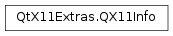

QX11Info¶
Synopsis¶
Static functions¶
- def
appDpiX([screen=-1]) - def
appDpiY([screen=-1]) - def
appRootWindow([screen=-1]) - def
appScreen() - def
appTime() - def
appUserTime() - def
generatePeekerId() - def
getTimestamp() - def
isCompositingManagerRunning([screen=-1]) - def
isPlatformX11() - def
nextStartupId() - def
removePeekerId(peekerId) - def
setAppTime(time) - def
setAppUserTime(time) - def
setNextStartupId(id)
Detailed Description¶
Provides information about the X display configuration.
The class provides two APIs: a set of non-static functions that provide information about a specific widget or pixmap, and a set of static functions that provide the default information for the application.
Warning
This class is only available on X11. For querying per-screen information in a portable way, use
PySide2.QtWidgets.QDesktopWidget.
-
static
PySide2.QtX11Extras.QX11Info.appDpiX([screen=-1])¶ Parameters: screen – PySide2.QtCore.intReturn type: PySide2.QtCore.intReturns the horizontal resolution of the given
screenin terms of the number of dots per inch.The
screenargument is an X screen number. Be aware that if the user’s system uses Xinerama (as opposed to traditional X11 multiscreen), there is only one X screen. UsePySide2.QtWidgets.QDesktopWidgetto query for information about Xinerama screens.
-
static
PySide2.QtX11Extras.QX11Info.appDpiY([screen=-1])¶ Parameters: screen – PySide2.QtCore.intReturn type: PySide2.QtCore.intReturns the vertical resolution of the given
screenin terms of the number of dots per inch.The
screenargument is an X screen number. Be aware that if the user’s system uses Xinerama (as opposed to traditional X11 multiscreen), there is only one X screen. UsePySide2.QtWidgets.QDesktopWidgetto query for information about Xinerama screens.
-
static
PySide2.QtX11Extras.QX11Info.appRootWindow([screen=-1])¶ Parameters: screen – PySide2.QtCore.intReturn type: long Returns a handle for the applications root window on the given
screen.The
screenargument is an X screen number. Be aware that if the user’s system uses Xinerama (as opposed to traditional X11 multiscreen), there is only one X screen. UsePySide2.QtWidgets.QDesktopWidgetto query for information about Xinerama screens.See also
QApplication.desktop()
-
static
PySide2.QtX11Extras.QX11Info.appScreen()¶ Return type: PySide2.QtCore.intReturns the number of the screen where the application is being displayed.
This method refers to screens in the original X11 meaning with a different DISPLAY environment variable per screen. This information is only useful if your application needs to know on which X screen it is running.
In a typical multi-head configuration, multiple physical monitors are combined in one X11 screen. This means this method returns the same number for each of the physical monitors. In such a setup you are interested in the monitor information as provided by the X11 RandR extension. This is available through
PySide2.QtWidgets.QDesktopWidgetandPySide2.QtGui.QScreen.See also
display()
-
static
PySide2.QtX11Extras.QX11Info.appTime()¶ Return type: long Returns the X11 time.
-
static
PySide2.QtX11Extras.QX11Info.appUserTime()¶ Return type: long Returns the X11 user time.
-
static
PySide2.QtX11Extras.QX11Info.generatePeekerId()¶ Return type: PySide2.QtCore.qint32Returns a new peeker id or -1 if some interal error has occurred. Each peeker id is associated with an index in the buffered native event queue.
For more details see
QX11Info.PeekOptionandpeekEventQueue().See also
peekEventQueue()PySide2.QtX11Extras.QX11Info.removePeekerId()
-
static
PySide2.QtX11Extras.QX11Info.getTimestamp()¶ Return type: long Fetches the current X11 time stamp from the X Server.
This method creates a property notify event and blocks till it is received back from the X Server.
-
static
PySide2.QtX11Extras.QX11Info.isCompositingManagerRunning([screen=-1])¶ Parameters: screen – PySide2.QtCore.intReturn type: PySide2.QtCore.boolReturns true if there is a compositing manager running for the connection attached to
screen.If
screenequals -1, the application’s primary screen is used.
-
static
PySide2.QtX11Extras.QX11Info.isPlatformX11()¶ Return type: PySide2.QtCore.boolReturns true if the application is currently running on X11.
-
static
PySide2.QtX11Extras.QX11Info.nextStartupId()¶ Return type: PySide2.QtCore.QByteArrayReturns the startup ID that will be used for the next window to be shown by this process.
After the next window is shown, the next startup ID will be empty.
http://standards.freedesktop.org/startup-notification-spec/startup-notification-latest.txt
-
static
PySide2.QtX11Extras.QX11Info.removePeekerId(peekerId)¶ Parameters: peekerId – PySide2.QtCore.qint32Return type: PySide2.QtCore.boolRemoves
peekerId, which was earlier obtained viaPySide2.QtX11Extras.QX11Info.generatePeekerId().Returns
trueon success orfalseif unknown peeker id was provided or some interal error has occurred.
-
static
PySide2.QtX11Extras.QX11Info.setAppTime(time)¶ Parameters: time – long Sets the X11 time to the value specified by
time.
-
static
PySide2.QtX11Extras.QX11Info.setAppUserTime(time)¶ Parameters: time – long Sets the X11 user time as specified by
time.
-
static
PySide2.QtX11Extras.QX11Info.setNextStartupId(id)¶ Parameters: id – PySide2.QtCore.QByteArraySets the next startup ID to
id.This is the startup ID that will be used for the next window to be shown by this process.
The startup ID of the first window comes from the environment variable DESKTOP_STARTUP_ID. This method is useful for subsequent windows, when the request comes from another process (e.g. via DBus).
© 2018 The Qt Company Ltd. Documentation contributions included herein are the copyrights of their respective owners. The documentation provided herein is licensed under the terms of the GNU Free Documentation License version 1.3 as published by the Free Software Foundation. Qt and respective logos are trademarks of The Qt Company Ltd. in Finland and/or other countries worldwide. All other trademarks are property of their respective owners.